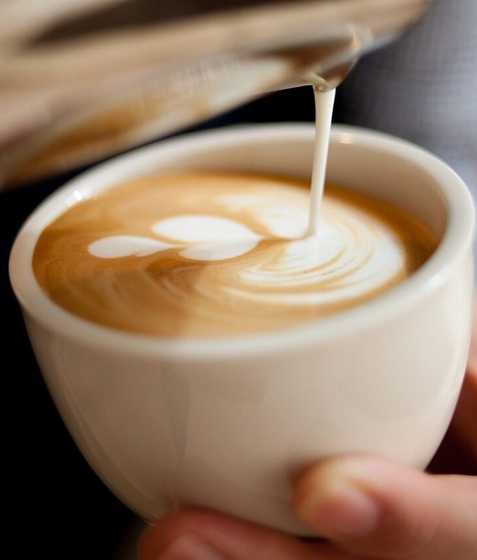

お店について
働く場所だった建物を、集う場所へ。
お店のInstagramやリンク集では、マタゼンカフェは運営元である有限会社神田板金の本社(事務所)をリノベーションして生まれた、「人が集まり繋がるカフェ」と紹介されています。テイクアウトにも対応しているとされています。
金属を扱う会社の建物が、地域の人が立ち寄って話せる場所に変わった。このページでは、その成り立ちを静かな金属色と温かなクリーム色で表しました。
情報源: Instagram @matazen_cafe / 神田板金のリンク集
店名の意味は確認できていないため、記載していません。色づかいや見出しの言い回しは制作側の表現です。
口コミ
ご利用のイメージ
以下の3件は、サイトの雰囲気を伝えるために制作側が作成した創作の例です。実在のお客様の声ではありません。
イメージ例建物の雰囲気が落ち着いていて、ついゆっくりしてしまいました。コーヒーとお菓子で一息つけます。
イメージ例友人と待ち合わせて、おしゃべりを楽しみました。人が集まる場所という言葉がしっくりきます。
イメージ例テイクアウトで一杯お願いして、帰り道に飲みました。気軽に立ち寄れるのがうれしいです。